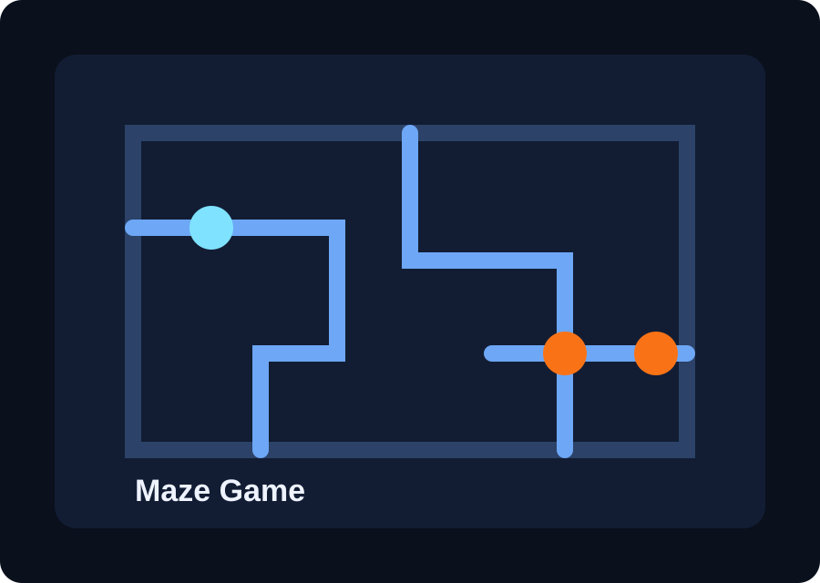

AI Assistant
Clinic Chatbot
A patient-facing chatbot concept aimed at answering routine questions, improving clarity, and reducing delays in accessing common clinic information.
View GitHub ProfileProjects
This page is designed to hold stronger project detail without losing readability. Each project card supports summary, technologies, links, and space for a visual preview.
AI Assistant
A patient-facing chatbot concept aimed at answering routine questions, improving clarity, and reducing delays in accessing common clinic information.
View GitHub ProfileInteractive Build
A logic-based game project with movement systems, level navigation, and enemy behavior designed to make the gameplay more dynamic and engaging.
View GitHub Profile